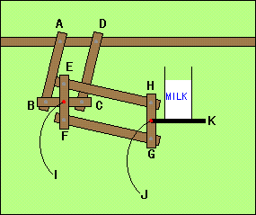

| In the right figure,AB=DC AD=BC EF=HG EH=FG.The side BC always intersects the side EF perpendicularly at I.The side GH and the line JK always meet perpendicularly at J.Let's think why the line JK is always horizontal and milk on JK does not spill from the glass. |  |